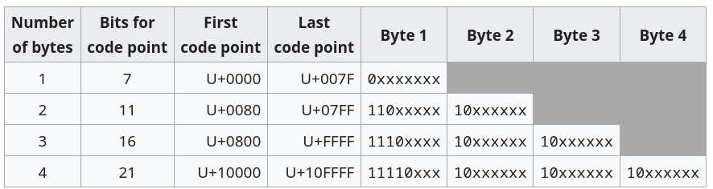
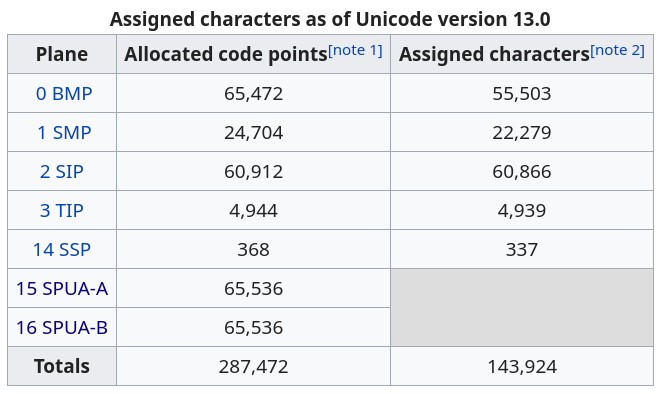
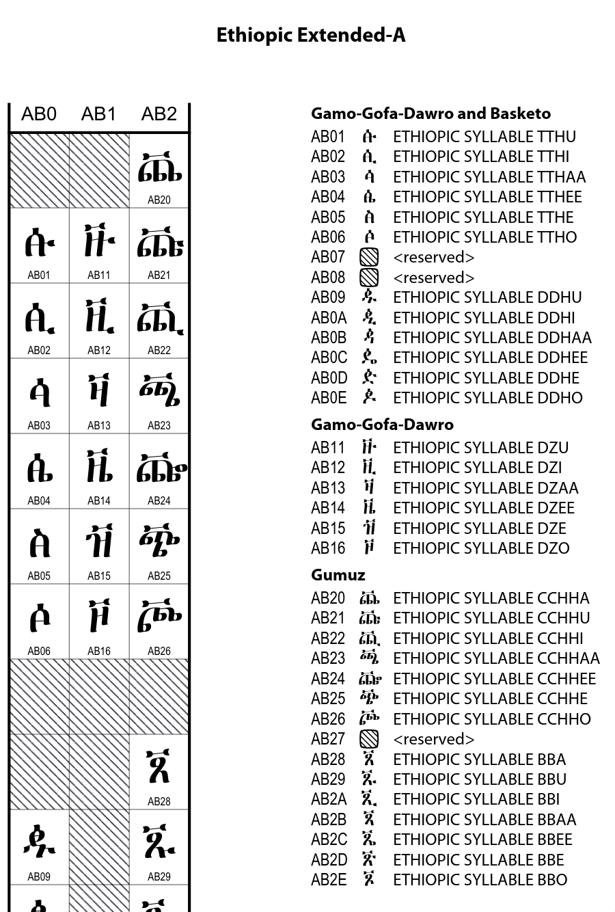
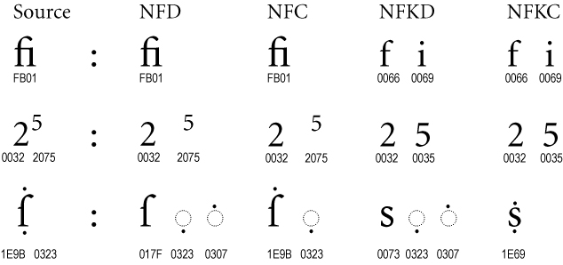
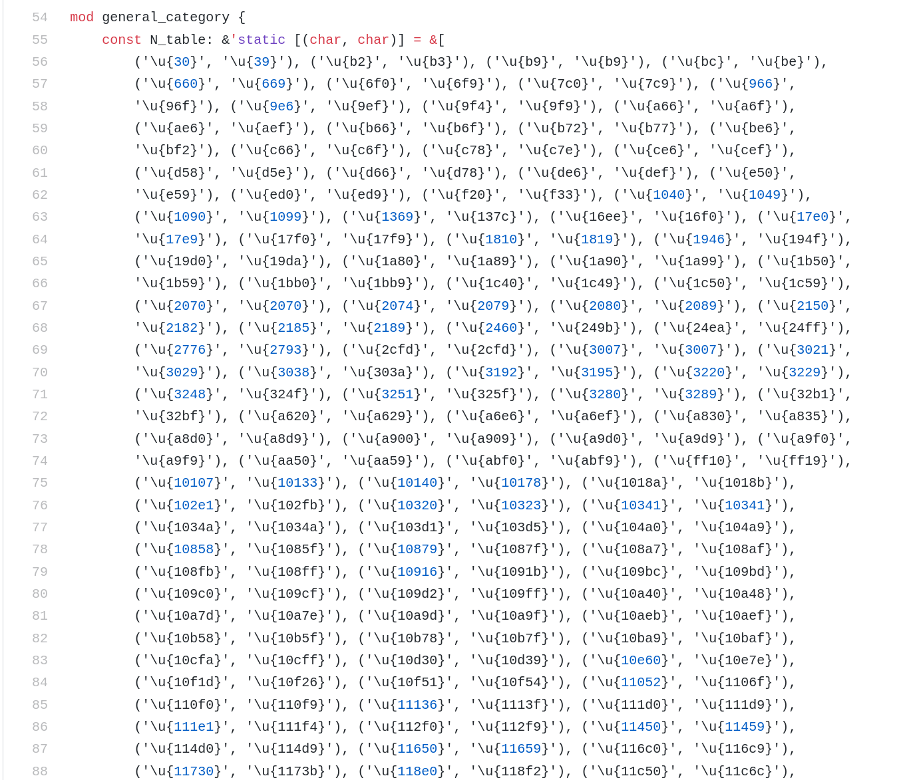

<!DOCTYPE html>
<html lang="en">
  <head>
    <meta charset="utf-8" />
    <meta name="viewport" content="width=device-width, initial-scale=1.0, maximum-scale=1.0, user-scalable=no" />

    <title>Unicode</title>
    <link rel="stylesheet" href="./css/reveal.css" />
    <link rel="stylesheet" href="./css/theme/black.css" id="theme" />
    <link rel="stylesheet" href="./css/highlight/zenburn.css" />
    <link rel="stylesheet" href="./css/print/paper.css" type="text/css" media="print" />
    <link rel="stylesheet" href="./assets/custom.css" />

  </head>
  <body>
    <div class="reveal">
      <div class="slides"><section  data-markdown><script type="text/template">
<link rel="stylesheet" href="https://use.fontawesome.com/releases/v5.0.13/css/all.css" integrity="sha384-DNOHZ68U8hZfKXOrtjWvjxusGo9WQnrNx2sqG0tfsghAvtVlRW3tvkXWZh58N9jp" crossorigin="anonymous">
<h1>Unicode</h1>
</script></section><section  data-markdown><script type="text/template">
Unicode is a standard maintained by the *Unicode Consortium*. The lastest version, Unicode 13, has been published in March 2020.
<br>

<br>
Unicode 13 contains 143.924 caracters.
</script></section><section  data-markdown><script type="text/template">
Unicode defines a list of caracters, but it can be encoded in several ways :
- __UTF-8__, __UTF-16__ : two variable width encodings
- __UTF-32__ : fixed width encoding
- __GB18030__ : official encoding of the CCP
- __BOCU__, __UTF-7__, ...
</script></section><section  data-markdown><script type="text/template">
<h3>UTF-8</h3>

</script></section><section  data-markdown><script type="text/template">
The Unicode character space is broken up into planes :
```
- 0x0000  - 0xFFFF   : Basic Multilingual Plane
- 0x10000 - 0x1FFFF  : Supplementary Multilingual Plane
- 0x20000 - 0x2FFFF  : Supplementary Ideographic Plane
- 0x30000 - 0x3FFFF  : Tertiary Ideographic Plane
- 0x40000 - 0xDFFFF  : Unassigned planes
- 0xE0000 - 0xEFFFF  : Supplementary Special Purpose Plane
- 0xF0000 - 0x10FFFF : Supplementary Private Use Area planes
```
</script></section><section  data-markdown><script type="text/template">


</script></section><section  data-markdown><script type="text/template">
<small>
The BMP is split into 163 blocks which cover a vide variety of languages.
<br><br>
Latin with extensions, covers from 0x0000 to 0x024F (591). From 592 to 65535, it covers other languages, with some symbols and control caracters.
<br><br>
The ideographic planes mainly cover CJK (Chinese - Japanese - Korean), since they share the same origins. The largest block covers 42.711 caracters.
</small>
</script></section><section  data-markdown><script type="text/template">
The official scripts reference list :

https://unicode.org/charts/
</script></section><section  data-markdown><script type="text/template">
Scripts


</script></section><section  data-markdown><script type="text/template">
<small>
With so many different languages everything becomes difficult :

<ul>
    <li>17 characters marked as "Space separator" in Unicode</li>
    <li>4 different markers for "Left-to-Right" text (and 4 more for "Right-to-Left")</li>
    <li>Some languages have different letters based on position in word or surrouding letters</li>
    <li>Lower / Uppercasing</li>
    <li>Character counting</li>
    <li>Word separation</li>
    <li>Regexes</li>
    <li>Accents and accented letters</li>
    <li>Normalization</li>
</ul>


Other languages conceive of writing very differently than we do.
<small>
</script></section><section  data-markdown><script type="text/template">
Normalization

http://unicode.org/reports/tr15/
</script></section><section  data-markdown><script type="text/template">
<small>4 different normalizations are defined by Unicode.
They are used to normalize the way diacriticts are encoded, but also as a projection of UTF-8 in general.</small>


</script></section><section  data-markdown><script type="text/template">
Character counting
</script></section><section  data-markdown><script type="text/template">
How many characters are there in :
क्षि♊🅱️

- 25 bytes
- 8 code points
- 3 graphemes
- Python len : 7
- JS len : 8

<small>(also editing this string broke my terminal and vim undo)</small>
</script></section><section  data-markdown><script type="text/template">
Gives rise to ugly algorithms :<br>

</script></section><section  data-markdown><script type="text/template">
Unicode oddities
</script></section><section  data-markdown><script type="text/template">
<table style="font-size: 0.6em;">
  <tr>
    <td>Ogham</td>
    <td>᚛ᚈᚑᚋ ᚄᚉᚑᚈᚈ᚜</td>
    <td>An old irish script that used to be carved in stones. The space is :  </td>
  </tr>
  <tr>
    <td>Alchemy</td>
    <td>🜢🜵  🜶  🜷  🜸  🜹  🜺  🜻  🜼</td>
    <td></td>
  </tr>
  <tr>
    <td>Hieroglyphs</td>
    <td>𓀉𓀁𓀅</td>
    <td></td>
  </tr>
  <tr>
    <td>Mahjong and chess pieces</td>
    <td>🀃🀇🀘 🨮🨰</td>
    <td></td>
  </tr>
  <tr>
    <td>Linear A</td>
    <td>𐘃𐘈𐘔𐘘</td>
    <td>An old minoan writing system that never was deciphered !</td>
  </tr>
</table>
</script></section><section  data-markdown><script type="text/template">
Unicode tries to encode all of written language.

> "The deepest philosophical knowledge lies already prepared in language." - Nietzsche
</script></section><section  data-markdown><script type="text/template">
Part 2 : Emojis & Fonts
</script></section></div>
    </div>

    <script src="./js/reveal.js"></script>

    <script>
      function extend() {
        var target = {};
        for (var i = 0; i < arguments.length; i++) {
          var source = arguments[i];
          for (var key in source) {
            if (source.hasOwnProperty(key)) {
              target[key] = source[key];
            }
          }
        }
        return target;
      }

      // Optional libraries used to extend on reveal.js
      var deps = [
        { src: './plugin/markdown/marked.js', condition: function() { return !!document.querySelector('[data-markdown]'); } },
        { src: './plugin/markdown/markdown.js', condition: function() { return !!document.querySelector('[data-markdown]'); } },
        { src: './plugin/highlight/highlight.js', async: true, callback: function() { hljs.initHighlightingOnLoad(); } },
        { src: './plugin/zoom-js/zoom.js', async: true },
        { src: './plugin/notes/notes.js', async: true },
        { src: './plugin/math/math.js', async: true }
      ];

      // default options to init reveal.js
      var defaultOptions = {
        controls: true,
        progress: true,
        history: true,
        center: true,
        transition: 'default', // none/fade/slide/convex/concave/zoom
        dependencies: deps
      };

      // options from URL query string
      var queryOptions = Reveal.getQueryHash() || {};

      var options = extend(defaultOptions, {"transition":"none","slideNumber":true}, queryOptions);
    </script>


    <script>
      Reveal.initialize(options);
    </script>
  </body>
</html>
